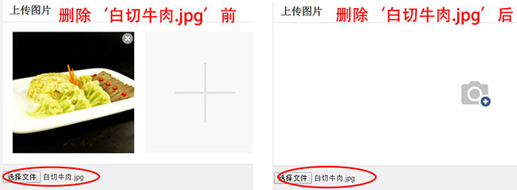

使用input[type='file']调用手机摄像头拍照并上传图片（canvas处理）
上传
使用<input type="file" capture="camera" accept="image/jpg, image/jpeg, image/png, image/gif">可以调用系统默认相拍照机，相册上传图片。
input[type='file']的默认样式很难看，我们可以将其隐藏，通过点击自己设置的图标来触发它的点击事件。代码如下：
<div class="camera-add"><i class="camera-icon" id="addPic-01"></i>
<div style="height:0px;overflow:hidden;">
<input type="file" id="f-pic" style="visibility:hidden;" capture="camera" accept="image/jpg, image/jpeg, image/png, image/gif">
</div>
$("#addPic-01").on("click", function(){
$("#f-pic").click();
})
在开发的过程中，如果上传白切牛肉，删掉。

如果再想上传'白切牛肉.jpg'，上传不了。这是因为第一次上传和第二次上传后，input[id='f-pic']里面文字是一样的，触发不了change事件。解决的办法简单粗暴，用replaceWith把旧的input[id='f-pic']替换掉。使用live()方法创建事件处理程序。
canvas处理图片
使用createObjectURL生成数据链接。
function getObjectURL(file) {
var url = null;
if (window.createObjectURL != undefined) { // basic
url = window.createObjectURL(file);
} else if (window.URL != undefined) { // mozilla(firefox)
url = window.URL.createObjectURL(file);
} else if (window.webkitURL != undefined) { // webkit or chrome
url = window.webkitURL.createObjectURL(file);
}
return url;
}
使用canvas生成处理图片并生成base64编码，显示预览。
function getImgToCanvasData(img, nw, nh, Orientation) {
// 新的临时画布
nw = Math.floor(nw);
nh = Math.floor(nh);
var canvas = document.createElement("canvas");
var ctx = canvas.getContext("2d");
$(canvas).attr({
width: nw,
height: nh
});
ctx.drawImage(img, 0, 0, canvas.width, canvas.height);
var data = null;
data = canvas.toDataURL("image/jpeg");
return data;
}
可以使用getObjectURL()方法中返回的url进行图片预览。因为手机拍摄的图片有时候如果不经过处理直接预览，图片会旋转逆时针旋转90度或顺时针旋转90度，这里使用exif.js判断并使用canvas进行处理。